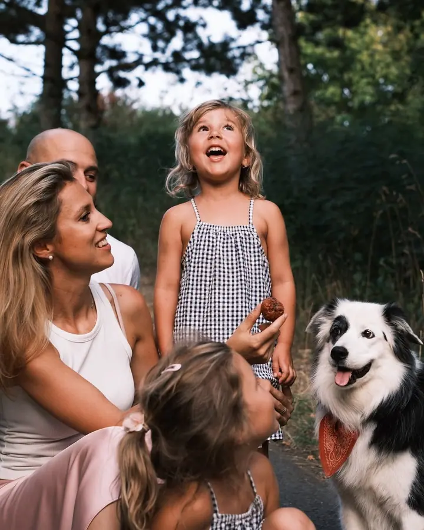
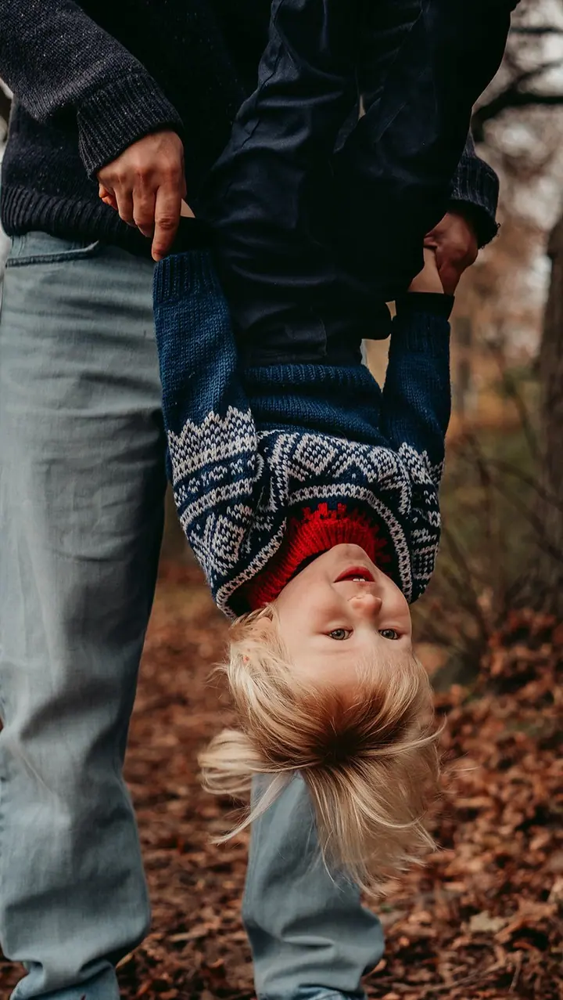
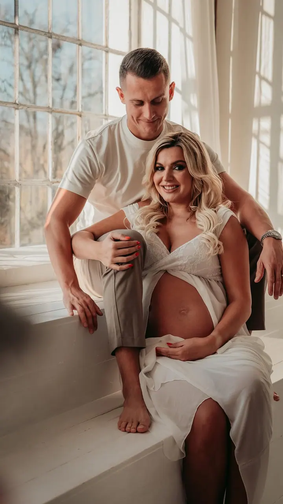

Lifestyle newborn
Miminka od narození do 6 měsíců fotím většinou u vás doma, nejčastěji v náruči rodičů. Nepolohuji je do trendy póz ani uzlíčků, a když je potřeba nakojit nebo přebalit, prostě počkáme.

Jmenuji se Olga Moravcová a fotím rodiny, miminka a budoucí rodiče v Praze, na Benešovsku a v okolí. Nejraději za vámi přijedu tam, kde se cítíte dobře, třeba domů, do k…
Rezervovat termínAhoj, to jsem já, Olga. K fotografování jsem se poprvé dostala při studiu na vysoké škole a byla to láska na první cvaknutí. S foťákem jsem pak procestovala kus světa a fotila krajinu, kulturu a život lidí z různých koutů zeměkoule.


Opravdovou sílu focení jsem ale pochopila až po narození svých dvou dětí. Čas pro mě dostal úplně jiný rozměr a fotky se staly cestou zpátky k tomu, co je opravdu důležité: vidět krásu v obyčejných chvílích a žít tady a teď.
Fotím nadčasově, přirozeně a s emocemi. Takovou fotku nejde jen tak naaranžovat, musí se poctivě odžít. Nebudu vás nutit usmívat se do objektivu na povel a děti necháme být dětmi. Já budu nenápadně pozorovat a jen lehce ovlivňovat, co se kolem děje.
Co fotím
Miminka od narození do 6 měsíců fotím většinou u vás doma, nejčastěji v náruči rodičů. Nepolohuji je do trendy póz ani uzlíčků, a když je potřeba nakojit nebo přebalit, prostě počkáme.
Může to být malý výlet, procházka na vaše oblíbené místo nebo pomalé sobotní ráno u vás doma. Na jaře mezi rozkvetlými stromy, na podzim někde s trochu moody atmosférou.
Přirozené fotky z doby, kdy čekáte miminko, venku na místě, které máte rádi, nebo v ateliéru. Ráda vám doporučím pár krásných ateliérů.
Portréty pro vaši značku a podnikání a fotky z eventů. Fotím přirozeně a bez strnulého pózování.
Postup
Vyplňte formulář nebo mi zavolejte. Ozvu se vám co nejdřív a domluvíme termín.
Před focením si spolu online projdeme vaši představu a vybereme místo. Klidně u vás doma, nebo na některém z mých oblíbených míst.
Focení trvá zhruba hodinu. U miminek klidně až dvě hodiny, aby všechno proběhlo bez stresu.
Upravené fotografie vám pošlu online do dvou týdnů od focení. Pokud to spěchá, po domluvě je zvládnu do tří pracovních dnů.
Otázky
Lifestyle focení (párové, těhotenské, rodinné) začíná na 3 200 Kč za 15 fotek, kolekce Premium se všemi povedenými fotkami (minimálně 40) stojí 4 700 Kč. Newborn začíná na 3 400 Kč za 15 fotek, Premium s minimálně 35 fotkami stojí 4 700 Kč.
Miminka fotím většinou u vás doma, rodiny a páry tam, kde se cítíte dobře. Doprava do 30 km od Poříčí nad Sázavou je zdarma (třeba Praha 4, Praha 10, Říčany, Benešov, Vlašim nebo Votice), dál účtuji 10 Kč za kilometr.
Úplně v pořádku, počítám s tím. Doma nemusíme nikam spěchat a focení se miminku plně přizpůsobí.
Do své práce dávám kus sebe a stojím si za ní, proto vám nabízím garanci spokojenosti.